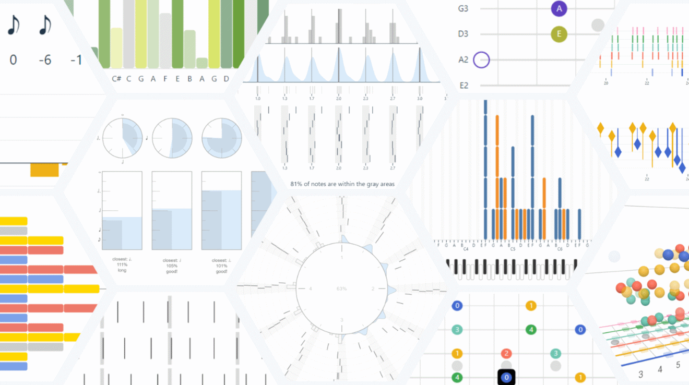

Make the Unhearable Visible: Exploring Visualization for Musical Instrument Practice

Venue. TVCG (2026)
Abstract. We explore the potential of visualization to support musicians in instrument practice through real-time feedback and reflection on their playing. Musicians often struggle to observe the patterns in their playing and interpret them with respect to their goals. Our premise is that these patterns can be made visible with interactive visualization: we can make the unhearable visible. However, understanding the design of such visualizations is challenging: the diversity of needs, including different instruments, skills, musical attributes, and genres, means that any single use case is unlikely to illustrate the broad potential and opportunities. To address this challenge, we conducted a design exploration study where we created and iterated on 33 designs, each focusing on a subset of needs, for example, only one musical skill. Our designs are grounded in our own experience as musicians and the ideas and feedback of 18 musicians with various musical backgrounds and we evaluated them with 13 music learners and teachers. This paper presents the results of our exploration, focusing on a few example designs as instances of possible instrument practice visualizations. From our work, we draw design considerations that contribute to future research and products for visual instrument education.
The PDF on this page is a pre-print, the final, published version at IEEE is (c) IEEE
Link to this page: